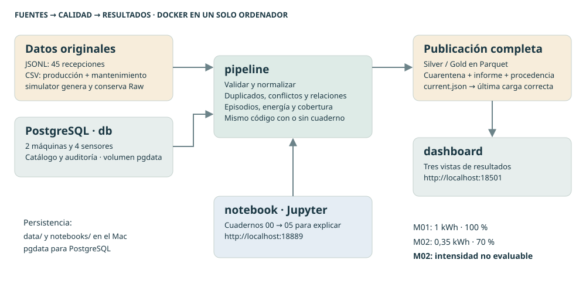

Sistemas de Big Data · RA1 · Solución del profesor
IndustrialData Mini.
Un dato no es
una conclusión.
Una fábrica pequeña para comprender un trabajo grande. Dos máquinas, cuatro fuentes y una demostración de 90 minutos sobre calidad, relaciones y consumo energético.
¿Podemos comparar estas dos máquinas?
M01 tiene cinco temperaturas elevadas consecutivas. En M02 faltan dos mediciones de potencia durante una intervención. ¿Hay un fallo? ¿Una parada? ¿Cuál consume menos por pieza? La práctica enseña a separar lo observado de lo que aún no podemos afirmar.
| Fuente | Muestra |
|---|---|
| Sensores · JSON Lines | 45 recepciones, con duplicado, conflicto, unidad incorrecta, máquina desconocida y fecha ilegible. |
| Producción · CSV | Dos filas: M01 produce 10 piezas correctas; M02 produce 8. |
| Mantenimiento · CSV | Una intervención planificada en M02, de 08:04 a 08:06 UTC. |
| Catálogo · PostgreSQL | Dos máquinas, cuatro sensores, unidades, cadencias y límites. |
Los valores son didácticos y sintéticos. Una alerta por umbral no confirma un fallo mecánico. Una ausencia de datos no demuestra una parada.
La misma lógica del trabajo original.
El generador prepara los datos; PostgreSQL mantiene el catálogo; el pipeline valida, integra y calcula. Jupyter muestra el proceso y el panel lee únicamente publicaciones completas. La carga ordinaria funciona sin abrir cuadernos.

Abrir esquema completo. En pantallas pequeñas, desplázalo horizontalmente. No se necesitan Hadoop, Kafka ni un clúster Spark para esta sesión.

Descarga, construye y ensaya.
Necesitas Docker Desktop y Docker Compose. En el MacBook Air M4 se ha probado ejecución ARM64. Deja alrededor de 2 GB de memoria disponibles para estos servicios y espacio para las imágenes. No instales Python ni PostgreSQL en macOS.
Terminal de macOS · carpeta del proyecto
git clone https://github.com/iesataulfoargentasor/industrialdata-mini-ra1.git
cd industrialdata-mini-ra1
bash preparar.sh
bash iniciar.shLa primera construcción requiere Internet: hazla antes de los 90 minutos. Si utilizas ZIP, abre Terminal en la carpeta real descomprimida. El arranque genera los mismos datos sin sobrescribir originales diferentes.
| Interfaz | Dirección | Para qué |
|---|---|---|
| Jupyter | localhost:18889/tree | Abre 00_Abrir_la_fabrica.ipynb y sigue 00 → 05. |
| Panel | localhost:18501 | Tres vistas; al principio indica que no hay resultados. |
| PostgreSQL | db:5432 dentro de Docker | Catálogo y auditoría, sin puerto público. |
Las direcciones localhost se refieren a tu ordenador. Los puertos están limitados a 127.0.0.1 y Jupyter no pide token: esta configuración es para una demostración local, no para publicarla en la red del aula.
Ensaya sin alterar el estado inicial de la clase
Terminal de macOS · carpeta del proyecto
docker compose exec notebook python /app/scripts/ensayar_cuadernos.pySe ejecutan copias de los seis cuadernos en data/ensayo_…/, con PostgreSQL real. Los originales y el puntero de la demostración se conservan.
Seis cuadernos, un recorrido completo.
Ejecuta celda a celda con Shift+Enter. Todos incluyen explicación, solución y comprobaciones. No son ejercicios pendientes; utiliza las preguntas para que el grupo prediga el resultado antes de mostrarlo.
| Cuaderno | Minutos | Objetivo |
|---|---|---|
| 00 · Abrir la fábrica | 0–18 | Cuatro fuentes, claves, unidades y conjuntos. |
| 01 · Calidad y trazabilidad | 18–35 | 45 = 40 aceptadas + 1 duplicado + 4 rechazos. |
| 02 · Relaciones e incidencias | 35–47 | No multiplicar piezas; cinco muestras forman un episodio. |
| 03 · Energía y cobertura | 47–62 | kW frente a kWh; cobertura de muestras frente a cobertura temporal. |
| 04 · Publicar y mostrar | 62–72 | Parquet, puntero de publicación y panel de tres vistas. |
| 05 · Repetir y comprobar | 72–90 | Recarga sin duplicación, pruebas y defensa de conclusiones. |
Resultados que puedes defender.
| Resultado | Valor esperado | Interpretación |
|---|---|---|
| Primera carga | 45 = 40 + 1 + 4 | Nuevas, duplicadas y rechazadas: categorías excluyentes. |
| Temperatura M01 | Un episodio [08:02, 08:07) | Cinco muestras consecutivas sobre 80 °C. |
| Energía M01 | 1 kWh · cobertura 100 % | 6 kW × 10/60 h. Con 10 piezas: 0,1 kWh/pieza. |
| Energía M02 | 0,35 kWh · cobertura 70 % | No evaluable por pieza: la energía está incompleta. |
| Muestras M02_power | 8 de 10 · cobertura 80 % | Dos muestras ausentes; diferente de cobertura energética. |
| Segunda carga | 0 nuevas + 41 duplicadas + 4 rechazadas | Siguen 40 observaciones consolidadas y un episodio. |
La trampa didáctica: 0,35 / 8 = 0,04375 parece mejor que 0,1, pero compara energía incompleta con producción completa. M02 no puede declararse más eficiente. Además, piezas de productos distintos requieren contexto para una comparación industrial.
¿Por qué dos muestras ausentes dejan tres minutos sin energía estimada?
Hay potencia a las 08:03 y a las 08:06. El segmento dura 180 segundos, más de 1,5 veces la cadencia de 60 segundos. Se excluye completo. Quedan siete de diez minutos cubiertos. No se rellena el hueco con ceros ni se supone potencia constante durante él.
Pruebas, recarga y persistencia.
Terminal de macOS · carpeta del proyecto
bash comprobar.shEjecuta 21 casos automáticos, publica una carga y consulta PostgreSQL. Si lo haces antes de clase, la siguiente carga ya será una repetición; el cuaderno 01 sigue mostrando en memoria los recuentos iniciales. No borres datos para aparentar un primer arranque.
Terminal de macOS · carpeta del proyecto
docker compose restart db dashboard notebook
docker compose run --rm pipeline python scripts/comprobar_postgres.pyLa comprobación posterior al reinicio no regenera datos. Verifica catálogo, auditoría y publicación. Para operar sin notebook:
Terminal de macOS · carpeta del proyecto
docker compose run --rm pipelinePara parar conservando el trabajo:
Terminal de macOS · carpeta del proyecto
bash parar.shPara reanudar: bash iniciar.sh. No uses down -v: elimina el volumen de PostgreSQL. Los cuadernos y archivos de datos permanecen en las carpetas del proyecto.
Una demostración de comprensión.
| En esta sesión | En el trabajo evaluable |
|---|---|
| Dos máquinas, diez minutos | Seis máquinas, 24 horas y perfiles de volumen. |
| Solución resuelta A1–A6 | Desarrollo, pruebas propias y defensa de A1–A7. |
| Casos de calidad y un episodio | Conjunto de escenarios S01–S08 y aceptación P01–P11. |
| Energía, cobertura y trazabilidad | Hallazgos documentados con limitaciones. |
| Una secuencia preparada de 90 minutos | Planificación y seguimiento individual durante el proyecto. |
Introduce conjuntos, reglas, integración de fuentes, modelos, calidad y decisiones de sistemas. No acredita todo el RA1: quedan fuera la implementación A7 pandas/Spark, los benchmarks completos, grandes volúmenes, costes y planificación prolongada. La tabla de casos A4 clasifica muestras; no simula todos los episodios de parada. El Avro escrito por el soporte no sustituye el experimento de formatos del alumno.
Consultar las funciones resueltas · Explorar los datos pequeños sin Docker